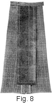

1923—Woolen Materials and Tailored Plackets
Woman's Institute of Domestic Arts & Sciences, by
Mary Brooks Picken
TAILORED PLACKETS
REMARKS
30. Tailored plackets are not unlike wash plackets, yet because of the materials used in the construction of tailored skirts, the methods of making them differ and they demand greater care. Tailored plackets require more basting and pressing than do wash plackets; in fact, extreme care must be taken with any tailored placket so as not to stretch either of its sides, for the woolen materials used in tailored skirts are almost ungovernable when they are once stretched; also, as the facing silk used in the construction of tailored plackets differs in weight and texture from the skirt material, it, too, must be carefully handled, so that it will not appear drawn or too full in any place. However, to make a placket that fastens up so perfectly that the skirt opening does not attract undue attention doubly repays any one for the time and effort that must be expended in its construction.
31. There are three kinds of tailored plackets; namely, the habit-back placket, the inverted-plait placket, and the welt-seam, or tucked-seam, placket. To be able to make tailored skirts successfully, it is imperative that every one of these tailored plackets be thoroughly understood and mastered. A good plan, therefore, is to procure pieces of woolen material that are large enough for plackets and to make them in the order in which they are described; then, when it is desired to make a tailored skirt, the finishing of the placket will not seem difficult.
HABIT-BACK PLACKET
32. The first tailored placket to be considered is the habit-back placket, or plain-seam placket, shown in Fig. 5. This placket derives its name from the fact that it is used in finishing the plain back of a woman's riding skirt, or habit. It is perhaps the easiest of all tailored plackets to make, and may be said to be the foundation tailored placket. A placket of this kind is generally placed at the center back of a skirt. It is often used on skirts whose seams are covered with straps, as it provides a neat, flat closing that is not bulky even with a strap over it. For a skirt finished with a slot seam, this kind of placket is also excellent.
33. Before taking up tailored plackets in detail, it may be well to call attention to the importance of basting. Each seam and each edge of any tailored placket should be carefully basted and pressed before any stitching is done, because woolen materials will slip and stretch under the presser foot of the sewing machine unless they are carefully held in place with basting. Especially is basting necessary when applying the facing pieces.
To finish tailored plackets properly, lengthwise facing strips of taffeta, messaline, percaline, or sateen are needed, and, no matter which material is used, it is generally referred to as facing silk. If the skirt is to be a very fine one, a good quality of taffeta or a firm messaline silk may be used as a finish; the taffeta is preferable, though, as it is easier to handle. For the majority of woolen skirts, percaline of the best quality is used, and for very heavy skirts sateen of close, fine weave is desirable. In selecting a facing, however, it is of the utmost importance to choose material that is in keeping with the material and the style of the skirt and that will wear equally as well as the skirt material. It is very unsatisfactory to use a facing material that does not correspond with the skirt material or that will wear out before the garment does. Also, as the facing of the placket must turn back over the rings of the hooks and come well up under the prongs, as at a, Fig. 5, the facing material must of necessity be thin enough not to interfere in hooking the skirt.
34. In constructing the habit-back placket shown in Fig. 5, mark-stitch the center-back seam as shown at a, Fig. 6, and measure down the placket length, as a rule, 11 in., from the waist line. Baste and stitch the seam from the lower end of the placket to the bottom of the skirt. Bind or overcast the edges of the seam, and then dampen the seam from the wrong side and press it open, being careful all the while not to stretch it in any place. For the fly, or extension pieces, cut a lengthwise piece of material 2 ½ in. wide and 1 ½ in. longer than the placket opening, and mark the center of the piece with basting thread, as shown at b; also, cut a piece of facing 3/8 in. larger on all sides than the strip of material just prepared for the fly and another piece of facing the same length as the first one and 2 in. wide. Slip this 2-in. strip under the right-hand side of the placket opening, with one end extending 1/4 in. above the material and one edge well over the mark-stitching line, as at c; baste it in this position and then turn the placket edge over on the mark-stitching line and baste, so as to avoid stretching the placket edge or facing in any place. Next, turn the left-hand side of the placket on the mark-stitching line, as at d, and baste it in position. Then, to make the fly, place the wrong sides of the strip of material and the facing together; turn the facing over 1/4 in. on each side of the strip and baste it in position; and then, to avoid too many thicknesses, clip the material diagonally across the corners of the lower end. With this done, turn the facing silk up at the clipped end on the strip the same width as on the sides and baste it down. Then, as shown at e and f, stitch around the strip, so as to hold the facing in position.
35. Next, adjust the gauge on the sewing machine so that it will give a very accurate stitched line the same distance from the edge of the placket opening as the remaining seams of the skirt are stitched from the edge. If no ornamental stitching is to be added to the seams on the right side of the skirt, then the stitching should be a generous 1/4 to ½ in. from the edge. Light-weight materials require the narrow stitching, while heavy-weight materials appear to better advantage if the stitching is placed in 3/8 to ½ in. from the edge. In stitching, be sure that the stitch is perfect and the gauge correctly adjusted, for a placket must never attract attention by uneven or poor stitching; in fact, in making a placket, a good point to remember is that it is there because of necessity, not for ornament, and that it must be neat, so as not to be conspicuous. Just a word here regarding the adjustment of the gauge. On some sewing machines, it will be found difficult to adjust the gauge or the quilter on the left-hand side of the presser foot, and, in some cases, if the quilter is used as a gauge, it will have to- be turned backwards, but in such cases extreme care must be taken to follow exactly along the edge of the placket.
Next, carefully press the placket edges, as well as the fly piece, so that they will be absolutely free from wrinkles. Stitch the right side of the placket first, stitching from the waist line down as far as shown in Fig. 6. At the end of the stitching, pull the thread through to the wrong side and fasten it. Also, turn the free edge of the facing back to within a scant 1/4 in. of the edge of the placket, as at a, Fig. 7, and press it in position, but do not whip it down. Pressing is done at this time merely to insure a neat finish at the bottom of the placket; that is, so that the end of the facing will be held down between the skirt and the fly portion. Later on, when the hooks are in position, the free edge of this facing piece is felled down under the prongs of the hooks, as at a, Fig. 5, thus covering the rings and stems of the hooks and giving a neat finish.
36. Next, place the fly piece, which has been finished on two sides and one end, so that the cloth side is up and its center is exactly underneath the center of the placket opening, as shown in Fig. 6. Bring the placket edges together directly over the basting that marks the center of the fly. Then pin carefully from the bottom of the placket up to the waist line, and, after pinning, baste both edges to the fly portion. It may not seem necessary to baste the right-hand side, since it is stitched, but it is well worth while. If such basting is carefully done, it will insure a perfectly smooth placket, especially at the bottom, which part, unless this precaution is taken, might appear drawn when the stitching is added to the left side of the placket.
When the fly is basted in position, mark a true triangular point directly across the end of the placket to serve as a guide in stitching at the end, using a piece of tailor's chalk for marking and the corner of an envelope to shape the point. Stitch the left side of the placket, next, beginning at the waist line and stitching down. For this work, adjust the sewing-machine gauge or quilter the same width as it was adjusted for the first stitching, so that the stitching will be the same on both sides of the placket opening. When the bottom of the placket is reached, turn and stitch down on the chalk line to the center of the placket, as at b, Fig. 5; then turn the work and stitch up to the termination of the stitching that was put in on the right-hand side of the placket, as at c. In this way, the stitching line will appear unbroken on the right side. As before, pull the machine threads through to the wrong side and fasten them securely. Then remove the bastings, and sponge and press the placket carefully. This is the most opportune time for pressing the placket, because it cannot be pressed well after the hooks and eyes are in position. With the exception of the band, the placket should now appear on its wrong side as in Fig. 8.
37. Mark for the hooks and eyes, next. A little difficulty may be experienced at first in spacing the hooks and eyes, but if their position is carefully marked and care is taken not to stretch the edge of the placket, there is no reason why the spacing should not be done without difficulty. Lay the placket out on the sewing table, right side up, and on it place the dressmaker's gauge with the small-scallop end toward the lower end of the placket. Place the lower edge of the gauge ½ in. above the end of the placket, so that the mark for the first hook and eye will come about ¾ in. from the end. A hook and an eye are placed close to the lower end of the placket to prevent it from being torn out, the usual practice being to hook them and then press them very firmly, so that they will not come unhooked. In marking the positions, take care to have the lengthwise slot of the gauge directly over the placket seam and to mark across each crosswise slot, moving the gauge up until the placket is marked its full length. The last mark may come up pretty close to the band, but this is a very good feature, for if the skirt is inclined to be the least bit tight around the waist and the space between the hook and eye and the edge of the band is large, the placket might gape below the band.
38. As a rule, a No. 2 hump hook with a straight eye is satisfactory for a tailored placket. If the material is very light in weight, a No. 0 hook and eye may be used; but as this size is a little tedious to fasten, the No. 1 size is preferable. Sew the hooks on first, placing them so that the prong of each hook is 1/8 in. from the right-hand edge of the placket and directly under the chalk mark. Sew over and over the rings of the hooks. It is not necessary to buttonhole them, as they will be covered with the facing; yet, the buttonhole-stitch gives strength, and if a person can buttonhole rapidly it is well to use this stitch. In fastening the hooks in place, be sure to sew over the rings and underneath the prong of each hook, making them as secure as possible, so that none of them will pull out of position by the continuous fastening and unfastening that they will be subjected to in putting on and removing the skirt on which they are used. In sewing hooks and eyes on the placket, always remember to begin at the bottom of the placket, for then if any slight fulness should by any chance work up on either side of the placket it can come out at the waist line rather than at the bottom of the placket. Sew the first hook under the first chalk mark at the bottom of the placket on the right-hand side; then sew one under each mark up to the waist line. When all the hooks are in position, sew the edge of the facing underneath the prongs of the hooks and fell it down neatly, as previously mentioned. Next, sew the eyes on with the buttonhole-stitch, placing the straight eyes directly opposite each mark on the left-hand side of the placket opening and straight with the edge of the placket, as shown at d, Fig. 5. For this work, buttonhole twist. that is as near the color of the material as possible should be used. If the material is very dark, black buttonhole twist is usually satisfactory. In sewing the eyes on, it is a good idea to hook up each hook and eye as the eyes are sewed in place, so that there will be no danger of their not hooking exactly right. The edges of the placket should come together in a perfectly straight line, as if they were a continuation of the seam; they must not overlap nor separate nor appear drawn or too full at any place. When the hooks and eyes are in position, trim the edges of the placket facing even with the edges of the skirt seam above the waist line.
39. The skirt belt, or band, should receive attention next. Skirt belting, or banding, which comes prepared, as shown in Fig. 7, is very satisfactory for tailored skirts. It is not bunglesome, yet it is strong enough to withstand the wear that skirts of this kind receive. For wash skirts, a band of the same material as that used for the skirt is desirable, but for tailored skirts, especially if the material is heavy, a band of the same material would be too bunglesome, because the seams would make it too thick and heavy; therefore, skirt banding should be used wherever possible for tailored skirts. Such banding is not expensive. A very good quality can be purchased for 10 cents a yard, and if it is bought in bolts of 12 yd. it can be had at a lower price. It comes in only a few colors—usually white, black, gray, and tan—but as a skirt band should never show, being always covered with a belt, a girdle, or a waist, these colors may be used with nearly all colors of woolen skirts.
40. So as to give a neat, substantial closing, the band of a tailored skirt should be cut 2 or 3 in. longer than the waist measure, the additional length depending on the kind of placket or the width of the fly. To put the band on, open it so that the crease in it will be on top and baste it to the wrong side of the skirt, beginning at the right-hand, or hook, side of the placket, with the edges of the belting about 1/16 in. below the waist line of the skirt and the end extending 3/8 to ½ in. beyond the edge of the placket; also have it extend the same distance beyond the other edge, as at b. Fig. 7. Then baste all the way around, basting the banding to the wrong side of the skirt and just below the edge of the tape that shows at c. This tape is put on when the skirt is fitted and is left in position so as to keep the band exactly the right size. Next, slip the skirt on to see whether the waist measure is correct. If it is not convenient to do this, measure the band very carefully to see that it corresponds exactly with the waist measure of the individual for whom the skirt is intended. To do this, hook up the placket and pin the band together exactly even at the waist line, and measure to make sure that it is correct. If it is too large, ease the skirt on the band, taking care, however, to keep the center front and center back of the skirt exactly in line with corresponding points on the band. If the band is too small and the turn-back, when let out as much as possible, will not give sufficient length, then piece the band very carefully and clip in several places the tape that was put on in fitting, so that the waist line of the skirt can be stretched sufficiently. When the size is correct, stitch the band to the skirt, stitching from the wrong side of the skirt, keeping it close to the edge of the band, and making the stitching appear on the right side, just below the tape, as at d. After it is thus stitched, turn the right end of the band in, and then, after turning the band over the right side, stitch it all the way around and overhand the ends, as at e. Complete the placket and the waistband finish by first sewing a hook on the right end of the band and an eye on the left end, and then sewing an eye at the center on the left-hand side and a hook on the right-hand side. Before sewing the inside hook and the inside eye in place, however, the exact position of each should be determined. To do this work properly, place the eye over the hook that is sewed to the right end of the band, close the placket just as it should come when the skirt is worn, and then, holding it firmly in this position, sew the eye in place. Next, put the hook that is to be sewed on the right-hand side into the eye at the left end, and, with the placket adjusted and held firmly, as before, sew this hook in place. By exercising care in placing this hook and this eye, a neat closing is assured.
Snap fasteners may be used in preference to hooks and eyes on a placket of this kind, if desired. In such a case, this edge of the facing is felled down before the snaps are added.
INVERTED-PLAIT PLACKET
41. The inverted-plait placket is shown in Fig. 9. Although it was one of the first tailored plackets in use, it is very convenient and satisfactory. It is rarely used with narrow skirts, but is always brought into use with the advent of full skirts and is employed when skirts appear very plain around the waist and hips and full at the lower edge, for the plait itself can be stitched down to give an absolutely plain effect, and yet allow freedom for walking or fulness at the bottom of the skirt. For figures that have large hip measures, a placket of this kind is more desirable than the habit-back placket, especially if the plait itself is stitched two-thirds of the placket length, as shown, because, as a rule, this kind of placket is made at the center back of a skirt and by stitching the plait just part way it will be permitted to open out across the fullest part of the hips, thus making the skirt appear to better advantage than it would if the plait were omitted.
42. The allowance for the plait is made on the skirt pattern itself. Usually it is extended 3 in. beyond the center-back line at the waist line and twice this distance, or 6 in., at the bottom. This amount, of course, is allowed on each of the back gores, so that the plaits will be uniform in size on each side of the center-back seam. In mark-stitching the pattern lines of a skirt that is to have an inverted plait, it is necessary to mark-stitch both the center-back line of the foundation skirt and the pattern line of the plait; then, when the skirt is basted together, the pattern lines of the plait be come the center back of the skirt and the center-back line of the skirt forms the placket edges, which meet directly over the center-back seam.
43. To prepare for the inverted-plait placket, baste and stitch the center-back seam of the skirt, which is the plait extension, from the waist line to the bottom of the skirt, and bind or overcast each edge. Then press the seam open, and on the right side of the center-back seam, exactly half way between the seam and the mark-stitched line, cut the material down from the waist line at this half-way point, making the slash as deep as the placket itself is to be, usually 11 in. Fig. 10 shows where the slash should be made.
44. To make the inverted-plait placket, cut two lengthwise strips of facing silk, making one of them 2 ½ in. wide and the other 2 in. wide, and each strip 1 in. longer than the placket opening. Place the right side of the narrower, or 2-in., strip to the right side of the cloth on the right-hand side of the placket, and baste and stitch it to the edge, turning it up at the end before stitching. Then turn the facing back to the wrong side of the placket and baste it down as at a, Fig. 10, leaving a scant 1/4 in. of the facing showing on the right side. Then turn and baste the edge of the facing along the line of the mark-stitches, as at b, letting it extend a scant 1/8 in. beyond the mark-stitched line, in order to give a good, firm edge over which to turn the plait. Next, join the 2 ½-in. piece to the opposite side of the placket in a similar manner. Turn the strip over to the wrong side and then turn and baste it as at c; crease it in the center and then baste it again on the edge, as at d. By turning the facing under in this way, thus making it double, it will be strong enough to hold the edge in position, and one row of stitching placed 1/8 to 1/4 in. from the edge will hold it in place. Having turned both ends at the bottom of the placket before stitching, overcast them together so that the opening will not appear bulky. Then stitch the facing strips along the edges from the right side, as at a and b, Fig. 11.
45. With these edges stitched, press the placket facings from the wrong side, so as to have them smooth and straight. Next, to the wrong side of the skirt, along the mark-stitched line to the left of the opening, baste a 6-in. lengthwise strip of ½- or ¾-in. facing silk or seam binding. This strip serves as a stay for one bias edge of the inverted plait and prevents it from stretching or sagging down. The facing strip for the opening serves this same purpose in the right-plait edge. Then turn the plait on the mark-stitched line back over the staying strip, turning from the right side, and baste it on this line all the way to the bottom of the skirt. The plait is basted the full length of the skirt to insure a true line its full length. When the edges of the plait are basted, bring them over and pin them in position, taking care to have their edges meet exactly over the seam and to baste very smoothly, neither stretching nor crowding them in. In doing this basting, place the work on the sewing table, so that the weight of the skirt will not pull the plait out of position. First, determine the length that the placket is to be and mark it accordingly with tailor's chalk straight across from one edge to the other. Then place a narrow board such as yard goods comes on, and which may be had for the asking in any dry-goods store, under the inverted plait, and baste from the termination of the placket to the bottom of the skirt on each edge, and on the left-hand side from the waist line down the entire length, basting through all thicknesses and keeping the edge of the plait exactly even with the seam.
46. Next, prepare to stitch the edges of the plait. If the skirt is part of a suit, or if the other seams are stitched in welt or open-welt effect, the stitching on the edges of the inverted plait should correspond with the other plaits or seam stitching; that is, if the stitching on the skirt or the suit is 1/4 in., the plait stitching should be 1/4 in. from the edge; if it is ½ in., then ½-in. stitching should be used for the plait. Remember to allow enough thread at the end of the stitching to be pulled through and fastened securely to the wrong side, so that the placket will not pull out at its lower edge. After determining the distance that the stitching is to extend from the waist line, mark it as already explained for the placket length—in this case, about two-thirds the length of the placket—and stitch the right-hand side first, as shown at c, Fig. 11, stitching from the waist line down. As has been mentioned, for very stout figures it is well not to extend this stitching the full length of the placket, so as to give more freedom over the largest part of the hips. For very slender figures, the stitching may extend farther down on the placket; but, in any case, it is best to make this stitching a little shorter than the placket, as such stitching gives a neater finish.
In terminating the stitching, as at d, it may be made to turn up or down at the end, as desired. Whichever plan is followed, the turn should be marked on both sides of the plait with tailor's chalk, so that the stitching on each side will correspond. Stitch through only the edge of the plait, as shown, and pull the threads through on the inside of the plait where they terminate and fasten them securely. Never try to tie, or fasten, them on the right side in a case of this kind, for the fastening is sure to show. Next, stitch the left side of the placket, as at e. This side is stitched in the same manner as the right side, except that the plait is stitched to the skirt itself.
47. With the stitching done, press the placket very carefully; then, when the band or belt is added at the waist line, the placket itself will be ready for the hooks and eyes. The illustrations of the inverted-plait placket here discussed show a band of the skirt material with a lining of facing silk. The band is applied in the same manner as any other band, except that the two kinds of material are used and joined in a seam at the upper edge of the band, as shown in Fig. 11. Sew the hooks and eyes on the band as in the habit-back placket; also, place hooks on the right-hand side and eyes to correspond along the left-hand edge, as at g. In securing these fasteners in place, sew through the center-back seam of the skirt; this will give strength and prevent them from pulling away from the skirt material. As will be observed on referring to Fig. 11, the hooks and eyes at the lower end of the placket are placed midway of the portion used as the fly. This plan is an excellent one, as the fasteners keep the placket in position and yet permit the plait to be open enough to allow for freedom at the bottom of the placket. The last hook and eye, as at h, should be hooked up and then pressed very firmly with an iron so that it cannot be unhooked. This will prevent the bottom of the plait from tearing out at its lower edge and will also keep the placket in position.
In sewing hooks and eyes on a placket of this kind, it is advisable to buttonhole the rings of the hooks, instead of sewing through in the ordinary way. The buttonholing will cover the rings neatly. Sometimes the rings are covered by slipping ribbon or silk seam binding under the prongs of the hooks. This binding, however, must be felled carefully to the placket edge to prevent the stitches from showing through. When the placket is fastened up and in position, the wrong side will appear as in Fig. 12, and the right side as in Fig. 9.
48. Variation of the Inverted-Plait Placket.—Sometimes the skirt material is of the kind that stretches easily, or it is desired not to cut into the material in order to prepare for the inverted-plait placket. In such cases, it is advisable to make a habit-back placket on the seam under the inverted plait. Such a placket is finished in the manner explained for a habit-back placket, except that the machine stitching does not show on the right side. To replace the outside stitching, it is necessary to slip-stitch the center-back seam line on the left-hand placket edge to the fly of the placket. Only half as many hooks and eyes are used, because the inverted plait is made to fasten over the placket and thus overcomes any danger of its gaping. When the underneath, or habit-back, placket is finished, it, as well as the edges of the inverted plait, should be thoroughly pressed. Then on the edges of the plaits should be sewed hooks and eyes, so that these edges may be brought together and fastened independently of the placket, but directly over it. In doing this, slip inside the plaits a strip of tape or a lengthwise piece of facing silk, ¾ in. wide, bringing it up close to the mark-stitching threads; this tape or facing silk will give a foundation for the hooks and eyes as well as for the stitching, which should extend down 4 to 5 in. on each side of the inverted plait to form a neat finish for the outside placket edges and to prevent them from stretching.
WELT-SEAM PLACKET
49. The welt-seam placket is shown in Fig. 13. This placket is generally used in two-gored skirts or in six-gored skirts, the placket opening of which is placed at the left side of the front or the back panel. The placket here illustrated is at the left side of a two-piece skirt that has a raised waist line supported by an inside belt.
50. To make the welt-seam placket, first cut two strips of facing silk, making each 1 ¾ in. wide and 1 in. longer than the placket opening. After the skirt seam has been mark-stitched, as in making the other plackets, determine the length of the placket. Then baste and stitch the seam from the bottom of the placket to the bottom of the skirt and bind or overcast the seam edges. Press the seam open, next, and clip across it at the lower edge of the placket, as shown at a, Fig. 14. With the seam thus prepared, baste one of the strips of facing silk to the material, placing its right side to the right side of the gore that is to form the underneath part of the placket. Then turn it to the wrong side, crease it in the center, and baste the edge, as at b. The folded edge of the facing silk may come right along the edge of the threads that mark the seam line, or it may extend 1/8 to 3/8 in. beyond the seam line; but in no case should it be so narrow as not to come to the mark-stitching at c. When this strip is basted in position, proceed with the other facing strip. Lay it so that its right side is to the wrong side of the skirt portion, as at d, having the edge come a little bit beyond the mark-stitching threads in order to give a firm edge to the plait. Then baste this facing strip in position, as at e, and baste again, as at f, so as to hold the facing silk well in position.
51. With the basting done, proceed with the stitching. Stitch the underneath edge of the placket portion where it was turned over, as at a, Fig. 15, so that the edge will be held securely in place. The reason for clipping the seam at the bottom of the placket, as at a, Fig. 14, will now be apparent. As will be seen, clipping must be done to make the seam lie perfectly flat when the placket is lapped into position. If a welt seam is used for the skirt, then it will not be necessary to clip the seam at the bottom of the placket, because the edges of the seam will then come over each other in forming the welt and will not have to be pressed open. Next, stitch from the right side, putting the row of stitching 1/4 to 3/8 or ½ in. from the edge of the placket, as at a, Fig. 13, and extending it to the bottom of the placket. In stitching, hold the underneath portion of the placket away so that it will not be caught in with the stitching; also, be sure to use a gauge or to mark the line on which to stitch with basting threads, so that there will be no danger of the stitching appearing crooked, for in a very plain placket of this kind the workmanship must be as nearly perfect as possible. When the bottom of the placket is reached in stitching, pull the upper machine thread down so as to readjust the material in the machine. Then lift the placket and place the underneath portion of the placket underneath the upper portion, and turn the spool of thread on the machine so as to wind up the thread that was made loose. When the material is adjusted under the presser foot, continue the stitching over to the edge of the seam. These few machine stitches make the bottom of the placket secure and will hold the upper and underneath portions together.
52. Before putting on either hooks and eyes or snap fasteners, the placket should be thoroughly pressed, so that it will lie perfectly smooth and not appear stretched or puckered in any place. If snap fasteners are to be used for fastening the placket, as in this case, the free edge of the facing silk on the upper edge of the placket should be brought over and felled down directly over the stitching that is put in from the right side. If hooks and eyes are to be used, the hooks should be sewed on first and the strip then brought over and felled down underneath the prongs of the hooks themselves. In a placket of this kind, always take care to turn the edges under at its lower edge and to slip-stitch them so that it will appear neatly finished. When the placket is stitched and pressed, proceed to put on the fasteners, remembering always to begin at the bottom of the placket opening to mark their positions and to sew them on in the same order.
53. When the fasteners are in position, the inside belt should receive attention. The fitting of the belt and other details are considered in a later Section in which the fitting of tailored skirts is taken up. The method of finishing off the belt at the placket opening is taken into consideration at this time, however, as will be seen on referring to Fig. 15. It is finished with three hooks and eyes, which serve to hold it securely in position. The eyes on the inside of the belt extend over the outer edge of the placket, which fact should be borne in mind, so that in making this style of placket a neat closing will be effected. As will be observed, no stitching appears on the right side of the skirt at the waist line.
In order to make provision for this finish, the upper edge of the skirt should be turned over the belting when the skirt is being fitted. After the fitting is done, and before the pins are removed, the belting should be turned back so that the upper portion of the skirt may be laid out flat. Then the skirt should be secured to the belting by small basting-stitches taken 1/4 in. below the upper edge of the belting and through the edge of the skirt that extends over the belting. After basting, the seam edge of the skirt should be trimmed quite close to the row of basting; then a narrow strip of bias silk that has its edges turned should be basted over the seam edge and secured on both sides with stitching, as is clearly illustrated in Fig. 15. The belting may then be turned back against the skirt and, as the illustration indicates, no stitching will show on the right side of the skirt.
54. Variations of the Welt-Seam Placket. — The way in which to make a welt-seam placket for a tailored wash skirt is shown in Fig. 16. The method of applying the facing is very similar to that just explained. In fact, the only difference is that the facing is stitched down, as at a, instead of being folded under and left loose or felled down. Such stitching holds the facing more securely and prevents it from pulling out in washing. The stitching in this style of placket should come in 1/8 to 1/4 in. from the edge of the pattern line of the skirt, so that it will not be seen when the placket is hooked up.
As will be observed, the skirt itself is stitched to the belt 1/4 to ½ in. from the upper edge, as at b. This stitching serves to hold the skirt securely, preventing it from working up or getting out of shape on the belt in laundering. The belt of this skirt, as will be seen, is provided with three hooks and eyes, and the placket itself is finished with snap fasteners. They are arranged so that the belt may be hooked first and the placket then hooked over and snapped into position. This plan permits the belt to be closed smoothly, and is much better than if the snaps were fastened directly over the hooks; in such a case, a ridge would be formed and the top of the skirt would not appear so neat as when the fastening of the belt and the overlapping edges of the placket are far enough apart to permit it to lie flat. In this case, also, the skirt is finished with a welt seam and the stitching extends from the waist line of the skirt to the bottom, as indicated at c.
55. Another way in which to make a seam placket is as follows: Bind the right-hand seam edge of the placket with a straight facing 1 1/4 in. wide. Stitch the facing on from the right side, and turn it over the edge of the material to the wrong side; then bring it back to the mark-stitched line that represents the seam line of the skirt, and baste it flat to the material. With this facing basted down, stitch a linen tape over the facing the full length of the placket, making this stitching come 1/8 to 1/4 in. outside the mark-stitched line, so that it will not show on the right side of the placket. By applying the facing in this way, it will not be necessary to fell the facing down, for when the stitching is added from the right side of the placket to finish the seam it will hold the edge securely in position. The underneath portion of a placket of this kind should be finished exactly the same as a seam placket. This style of placket will not be satisfactory if hooks and eyes are used; but if snap fasteners are used it will prove very durable and satisfactory, as the tape used on the inside holds the placket firmly in position and at the same time serves as a foundation for the snaps, preventing the stitches from showing on the right side of the placket.
WOOLEN MATERIALS AND TAILORED PLACKETS
EXAMINATION QUESTIONS
NOTE.—In connection with the answers in reply to these Examination Questions, it is necessary to submit samplers of two plackets. These samplers may be made of any firm, light-weight woolen material on hand and should be of the regulation size, with at least three snap fasteners or three hooks eyes sewed on.
- What is the chief source of the wool used in the manufacture of woolen fabrics?
- What are the five points to be considered in the selection of woolen materials?
- What distinction is made between woolen and worsted fabrics?
- (a) Mention the articles required for pressing and sponging, or shrinking, woolen materials.
(b) Why should a press board that has become warped or sunken be reversed? - (a) Why is it necessary to shrink woolen materials before making them into garments?
(b) Why is it advisable to clip or remove the selvage of woolen material before shrinking it? - Explain how to shrink materials that do not have a glossy finish.
- Explain how to shrink materials that have a glossy finish.
- Why is it not advisable to use new material for a press cloth?
- What should be the temperature of the iron in pressing woolen materials?
- Tell how garments may be steamed to remove shine.
- What are two points of difference in the making of tailored and wash plackets?
- Submit a sampler of a habit-back placket with hooks and eyes.
- Submit a sampler of a welt-seam placket with snap fasteners.
- Explain how an inverted-plait placket is made without the addition of a fly.
- In what part of the skirt is the welt-seam placket generally placed?
- In making a skirt with an inside belt, how should the fastening of the belt and the placket be arranged?
- (a) When is it advisable to finish an inverted-plait placket as a habit-back placket?
(b) Why is tape used inside the plaits of a habit-back, inverted-plait placket? - When should a placket be thoroughly pressed?
- In sewing the fasteners on a placket, why is it necessary to begin at the bottom?
- (a) Why should the band of a skirt be cut longer than the waist measure?
(b) What regulates this allowance?